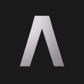
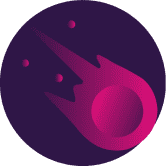
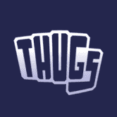
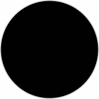
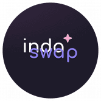
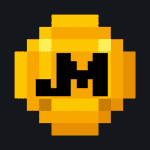
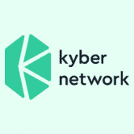
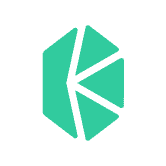
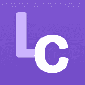
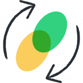

ZEDXION ZEDXION 加密货币交易所 在过去 24 小时内的交易量超过 1B 美元。您可以交易 83 个加密货币对。您可以使用 USDT 等流行的加密货币交易加密货币。 现货、合约、IEO、E
Zethyr DEX Aggregator Zethyr DEX 聚合器是一个完全去中心化的应用程序，它聚合不同的 DEX 和掉期以提供最佳汇率。立即以最优惠的价格、零费用交换 TRON 代币。 Zethyr DEX Aggregator 是一个用于交换基于 TRON
Saturn Network Saturn Network 是用于交易以太坊的去中心化交易所以太坊经典代币。 Saturn Network 无需审查，具有自动代币自上市和钱包到钱包交易功能，无需存款或取款。所有支付的交易费用
 Spartacus 我们的目标是将 SPEX 打造成 Fantom 上领先的 DEX 之一。但是，我们不会止步于此。我们相信 ve(3, 3) 的资本效率将在以太坊主网上找到最佳应用，在那里 SPEX 将向更广泛的加密
SpookySwap SpookySwap 是 Fantom Opera 网络的自动做市 (AMM) 去中心化交易所 (DEX)。 与其他 DEX 不同的是，我们通过 BOO 代币作为治理代币、多样化的农场、鼓励其他 Fantom 项目的健康生态的赠款
 StellaSwap StellaSwap 是第一个也是领先的 Moonbeam DEX，它提供了通往 DeFi 世界的集成网关。 StellaSwap 专注于为最终用户创建一个全面的 DeFi 产品套件，并在互操作性和可扩展性的前提下为在 Moonbeam
 StreetSwap StreetSwap 是 Thugs.fi 项目的 AMM 分支。 来 StreetSwap 满足您的所有交易需求。 为任何代币对提供流动性，以获得链上的一些最佳费用奖励！ 将您对 StreetSwap 的访问与我们的 Traphouse Yield Farms 结合起来，在
Gswap by Gravis Finance 先进的多链 AMM DEX、流动性迁移、农场、NFT。 简单漂亮的用户体验/用户界面 我们将于世界标准时间 4 月 20 日下午 1 点启动 GRVS 质押🔥🔥🔥 👉利润： 45 天
HOP Protocol Hop 是一个可扩展的 rollup-to-rollup 通用令牌桥。它允许用户几乎立即将令牌从一个汇总发送到另一个汇总，而无需等待汇总的挑战期。 一种以快速且无需信任的方式跨汇总及
 Incognito DEX Incognito pDEX - 是第一个允许跨链交易的机密、无需许可的去中心化交易所。这是一种不同的交换。它是非托管的（这意味着你的钱实际上是你的），它是去中心化的（
 IndaSwap 第一个 Fiat-to-DeFi 交易所，您可以在其中使用 Visa&Mastercard 购买您喜欢的代币 IndaSwap 是第一个也是唯一一个 Fiat-to-DeFi 网关，加密货币信徒可以直接通过 Visa & 购买最喜欢的 DeFi 代币。万事达卡全球
Jetswap Jetswap 是币安智能链上的去中心化自动做市商 (AMM)，费用低，交易执行即时。用您自己的钱包舒适地进行交易！ 低费用 Jetswap 在币安智能链 (BSC) 上运行，这是一种专
 JustMoney Swap JustMoney.exchange 是一个去中心化的自动化做市商 (AMM) 交易所。其去中心化金融（DeFi）应用程序允许用户交换代币并为各种加密货币对提供流动性。 Justmoney，
KwikSwap Protocol KwikSwap 是具有第 2 层扩展的革命性交换协议，由 Ethereum、Polkadot 和 Plasma 提供支持。交换，增加流动性，创造市场和股权！ KwikSwap 是一种革命性的交换
 Kyber Kyber Network 是一个允许数字资产交换和转换的新系统。我们提供丰富的支付 API 和新的合约钱包，让任何人都可以无缝地接收来自任何代币的付款。 Kyber Network 是一个基于区块
 KyberSwap KyberSwap 是在 Ethereum、Polygon、Binance Smart Chain (BSC)、Avalanche 和 Fantom 等网络上进行交易和赚钱的最佳场所；您可以获得最优
LinkSwap LINKSWAP 平台具有独特的功能，旨在解决我们这个时代第二代 AMM 面临的痛点——无论是对于 LINK 持有者，还是对于整个 DeFi 社区。一些主要功能包括 SlipLock，它
 LocalCryptos LocalEthereum 是人们点对点交换 ETH 和其他加密货币的方式。 黑客每年从中心化交易所窃取数十亿美元。几乎每周都会发生新的百万美元抢劫案。 非托管平台不受这些威胁的
 Mento-fi Celo 拥有稳定的价值资产，例如 Celo Dollar (cUSD)。 Mento 使这些代币的价值保持稳定。它还提供了一种交换，因此任何人都可以在本地资产之间进行交易。Ment
DonkSwap Donkey King Finance 成立于 2021 年 4 月，正值加密地毯拉动时代。目标是创建一个安全的地方来投资币安智能链（BSC）项目，同时开发一个受益于该生态系统的前进项目生
Dopple Finance Dopple 是稳定币 DEX，专为在币安智能链上高效交换稳定币而设计。 Dopple 的原生代币 DOPX 用于铸造 Dopple 的分数算法稳定币 KUSD。可用的稳定币池：KUSD、BUS
GameX Swap GameX Swap 如何与新生态系统协同工作？ GameX Swap 是一个去中心化交易所，已经创建了一个新的生态系统，另一种代币 XGameX 将成为这个新生态系统的新焦点。 在 GameX Swap 中，您可
Lizard 由 Oasis 提供支持的 Oasis Emerald Paratime 和以太坊资产的社区驱动去中心化交易所，具有快速结算、低交易费用和民主分配的特点。 Lizard 为您带来最佳的交易机会，让您找到并最大
Loopring Exchange Loopring 是一种使用 zkRollup 在以太坊上构建高性能、非托管、订单簿交换的协议。 介绍 Loopring DAO 投票！💙 社区将选择他们想用路印协议费用激励哪些流动性提供者 通过在 L2 上与
Lootswap LootSwap 是 Harmony 网络上的幻想游戏主题 DEX 一些骗子创建了一个假的 ONEFI 令牌。这是一个骗局。在任何情况下都不要购买。 OneFi 的官方代币尚未推出。一旦完成，我们将分享真
Madison Finance Madison Finance 是一种金融协议，在麦迪逊自动做市商 (AMM) 的支持下改进了无需许可的交易，使用户能够快速、无国界地跨各种链进行交易操作。 Madison Finance 是托管在 Smart Chain 网络上的
DeFi Plaza DeFi Plaza 是一家低成本交易所，为 120 对交易量最大的 DeFi 代币提供一流的兑换成本。 高度集成的设计使所有 120 个交易对的 Gas 成本最低，且交易所费用低至 0.1%。 尽
Deri Protocol 德里，你的选择，你的未来！ Deri 协议是交易衍生品的 DeFi 方式：对冲、投机、套利，一切都在链上。使用 Deri 协议，交易在 AMM 范式下执行，头寸被标记为 NFT，可
DeversiFi DeversiFi 唯一的高速去中心化交易所，交易者可以直接从其私人钱包的安全性中执行任何规模的订单。到 2020 年 3 月成为第一个由 StarkWare 提供支持的交易所。使用 Dever
")


 交易所，其愿景是结束拉扯，并为投资 BSC 项目创造一个安全的空间。")